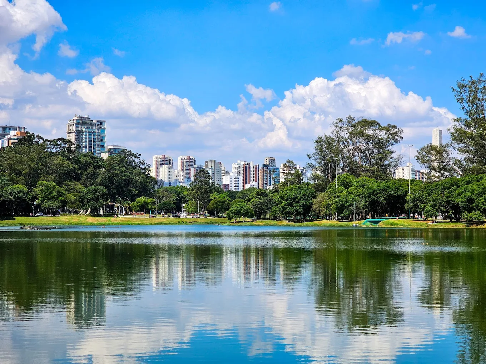
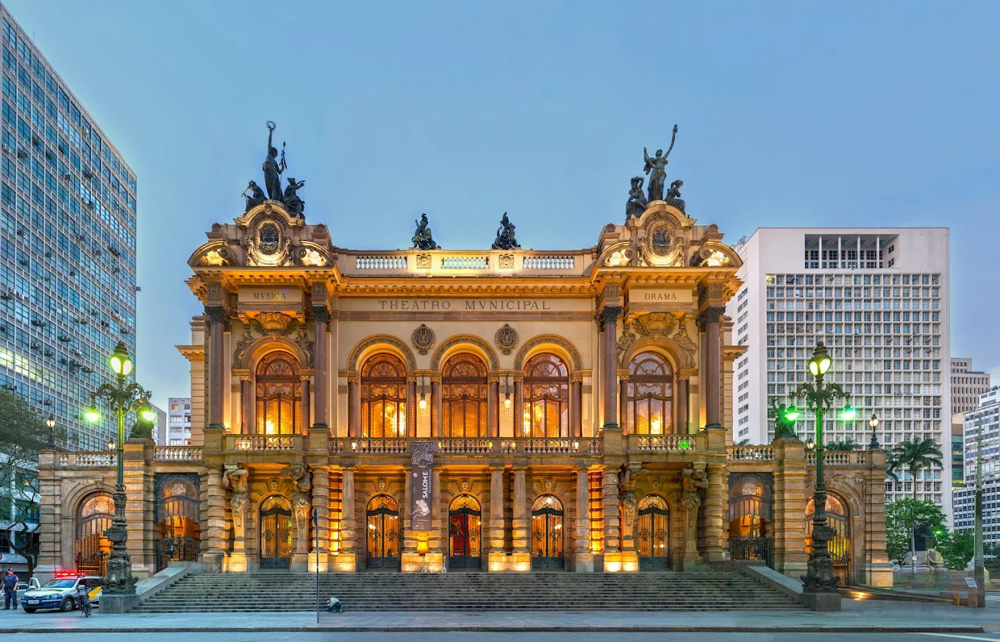

Museu do Ipiranga
Localizado no Parque da Independência, o museu reúne acervo histórico sobre a formação do Brasil e é um dos símbolos da Independência.
Explore quatro pontos turísticos imperdíveis de São Paulo e descubra um pouco mais da Cidade.
Localizado no Parque da Independência, o museu reúne acervo histórico sobre a formação do Brasil e é um dos símbolos da Independência.

O parque mais famoso de São Paulo, ideal para lazer, caminhadas, museus e eventos culturais, cercado por muito verde.

Um dos prédios mais importantes da cidade, conhecido por sua arquitetura histórica e por receber grandes apresentações de ópera, música e dança.

Estádio moderno localizado em Itaquera, casa do Corinthians, conhecido por sua arquitetura e por sediar grandes jogos e eventos.